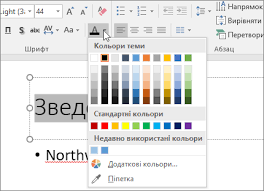

Div - це блоковий елемент, який використовується для створення структури
веб-сторінок. Ми застосовуємо його для групування різних елементів та створення
"контейнерів" на веб-сторінці. Тег div є надзвичайно гнучким, дозволяючи нам застосовувати
CSS стилі для форматування розділів сторінки, таких як заголовки, навігаційні панелі,
основний контент та футери.
Span - це інлайновий(вбудований або рядковий) елемент, представлений тегом. Ми використовуємо span для
стилізації або відмінності частин тексту в межах інших елементів, не створюючи при цьому нових блоків.
Наприклад, ми можемо використати span для зміни кольору, шрифту або інших стилістичних характеристик окремих
слів або фраз у межах абзацу, не порушуючи при цьому загального потоку документа.
Обидва ці теги є незамінними у веб-розробці, оскільки вони дозволяють нам відокремлювати, групувати та стилізувати контент на сторінці, що є ключовим для створення чітко структурованих та візуально привабливих веб-сайтів.
Змінення кольору та стилю маркерів
Ви можете змінити колір, стиль або розмір маркерів або номерів у презентації PowerPoint, а також змінити
номер, з якого потрібно почати.

- Щоб змінити один маркер або номер, розташуйте курсор на початку рядка, який потрібно змінити. Щоб змінити кілька маркерів або номерів, виділіть текст біля всіх маркерів чи номерів, які потрібно змінити.
- На вкладці Основне клацніть стрілку поруч із кнопкою Маркери або Нумерація , а потім виберіть пункт Маркери та нумерація.
- У полі Маркери та нумерація на вкладці Маркірований або Нумерований (залежно від типу списку, з яким ви працюєте) виберіть потрібні зміни стилю, наприклад:
- Стиль маркера або номера
- Color
- Розмір (щоб змінити розмір маркера або номера, щоб змінити його розмір відносно тексту, натисніть кнопку Розмір і введіть відсоток)
- Початковий номер (на вкладці Нумерований введіть потрібне число в полі Почати з)
- Зображення (щоб використати зображення як маркер, на вкладці Маркірований натисніть кнопку Рисунок і прокрутіть список, щоб знайти зображення)
- Символи (щоб тимчасово додати символ зі списку символів на вкладку Маркірований , на вкладці Маркірований натисніть кнопку Настроїти, виберіть символ і натисніть кнопку OK. Символ можна застосувати до слайдів зі списків стилів).
- Рисунки SmartArt (щоб перетворити наявний маркірований або нумерований список на рисунок SmartArt, натисніть кнопку Основне > Перетворити на рисунок SmartArt)
Після підключення до моєї сторінки файлу css Normalize зовнішний вигляд сторінки ніяк не змінився. На відміну від файлу css Reset, після підключення якого всі налаштування сторінки злетіли: заголовки h1,h2 стали маленького шрифту, анулювались відступи та нумерація ul li та зникли всі абзаци.